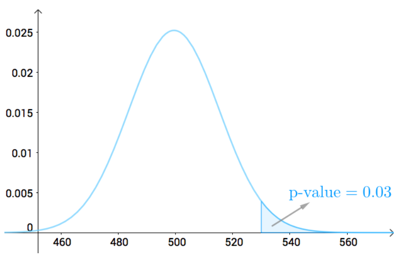
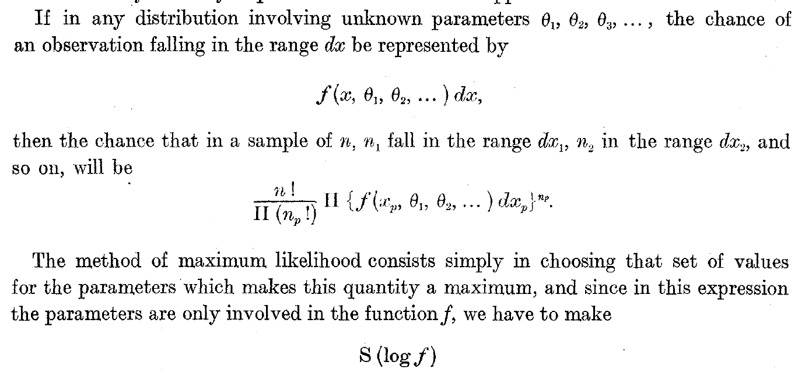
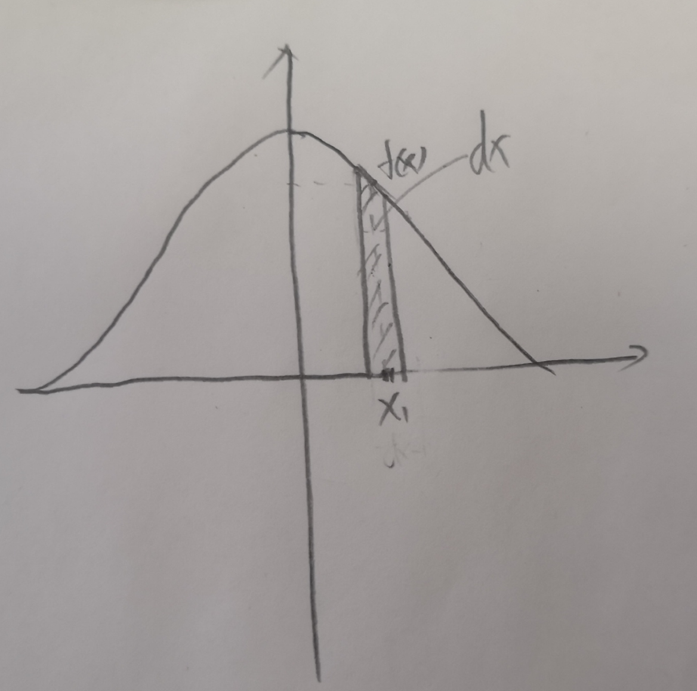

<!DOCTYPE html>


<html lang="zh-CN">


<head>
  <meta name="baidu-site-verification" content="codeva-NSg7ynviLa" />
  <meta charset="utf-8" />
    
  <meta name="viewport" content="width=device-width, initial-scale=1, maximum-scale=1" />
  <title>
    为什么最大似然估计使用概率密度 |  VincereZhou&#39;s blog
  </title>
  <meta name="generator" content="hexo-theme-ayer">
  
  <link rel="shortcut icon" href="/images/mojie.jpg" />
  
  
<link rel="stylesheet" href="/dist/main.css">

  <link rel="stylesheet" href="https://cdn.jsdelivr.net/gh/Shen-Yu/cdn/css/remixicon.min.css">
  
<link rel="stylesheet" href="/css/custom.css">

  
  <script src="https://cdn.jsdelivr.net/npm/pace-js@1.0.2/pace.min.js"></script>
  
  

  

<link rel="alternate" href="/atom.xml" title="VincereZhou's blog" type="application/atom+xml">
</head>

</html>

<body>
  <div id="app">
    
      
    <main class="content on">
      <section class="outer">
  <article
  id="post-为什么最大似然估计使用概率密度"
  class="article article-type-post"
  itemscope
  itemprop="blogPost"
  data-scroll-reveal
>
  <div class="article-inner">
    
    <header class="article-header">
       
<h1 class="article-title sea-center" style="border-left:0" itemprop="name">
  为什么最大似然估计使用概率密度
</h1>
 

    </header>
     
    <div class="article-meta">
      <a href="/posts/f86994ef/" class="article-date">
  <time datetime="2021-11-19T14:22:02.000Z" itemprop="datePublished">2021-11-19</time>
</a> 
  <div class="article-category">
    <a class="article-category-link" href="/categories/%E7%90%86%E8%AE%BA%E5%AD%A6%E4%B9%A0/">理论学习</a> / <a class="article-category-link" href="/categories/%E7%90%86%E8%AE%BA%E5%AD%A6%E4%B9%A0/%E7%BB%9F%E8%AE%A1/">统计</a>
  </div>
  
<div class="word_count">
    <span class="post-time">
        <span class="post-meta-item-icon">
            <i class="ri-quill-pen-line"></i>
            <span class="post-meta-item-text"> 字数统计:</span>
            <span class="post-count">821</span>
        </span>
    </span>

    <span class="post-time">
        &nbsp; | &nbsp;
        <span class="post-meta-item-icon">
            <i class="ri-book-open-line"></i>
            <span class="post-meta-item-text"> 阅读时长≈</span>
            <span class="post-count">2 分钟</span>
        </span>
    </span>
</div>
 
    </div>
      
    <div class="tocbot"></div>


  
    <div class="article-entry" itemprop="articleBody">
       
  <p>在看极大似然估计的公式时，一个问题一直盘旋在我的心中，为什么对于连续变量采用概率密度函数呢？</p>
<span id="more"></span> 
<h1>极大似然估计概述</h1>
<p>直接把维基百科的话复制过来如下<a target="_blank" rel="noopener" href="https://zh.wikipedia.org/wiki/%E6%9C%80%E5%A4%A7%E4%BC%BC%E7%84%B6%E4%BC%B0%E8%AE%A1">^1</a>：</p>
<p style=""></p><p>若  是离散分布，  即是在参数为  时观测到这一采样的概率。**若其是连续分布，  则为  联合分布的概率密度函数在观测值处的取值。**一旦我们获得 , 我们就能求得一个关于  的估计。最大似然估计会寻找关于  的最可能的值 (即, 在所<br>
注意</p>
<ul>
<li>这裡的似然函数是指  不变时， 关于  的一个函数。</li>
<li>最大似然估计不一定存在，也不一定唯一。</li>
</ul>
<h1>问题</h1>
<p>我同时查看了很多知乎上的回答，基本上所有人提到  为<strong>连续变量</strong>时，则似然函数采用联合概率密度值。就仅仅是这么一笔带过，没有人给我任何解释为什么这里用概率密度。但是，所有人在解释极大似然的含义时，均称极大似然函数在参数为  时这些样本点出现的概率或可能性。那么我的问题来了，<strong>极大似然为什么用概率密度函数表示这些点出现的概率？</strong></p>
<p>学过概率论都知道，第一，<strong>概率密度不是概率，概率密度函数的积分才是概率</strong>，你怎么指着概率密度说是概率呢？；第二，<strong>连续变量在某一点的概率为0</strong>，所以你说连续变量出现在某一个点的概率高低根本毫无意义啊。</p>
<p>我知道似然函数定义就是这样，但我觉得如果有人只告诉我定义就是这样，这不能让我信服。</p>
<p>我一开始有一个误解，我为了说通似然函数采用概率密度这件事，我将其理解成 P值的概念，即<strong>出现比这个残差相同或更极端情况的概率</strong>。比如正态分布，画出图像如下（图片来自网络，侵删）。我们可以看到出现这个残差或更极端情况的概率，与<strong>该残差的概率密度函数的值的大小成正比</strong>。于是似然函数中直接使用概率密度貌似就可以理解了。但是我慢慢发现，这个理解不对。</p>
<p></p>
<h1>新的理解</h1>
<p>后面我查看Fisher在1922年发表的论文<a target="_blank" rel="noopener" href="https://royalsocietypublishing.org/doi/10.1098/rsta.1922.0009">^2</a>，这好像也是第一次提论最大似然的地方。水平有限，看不太懂，但我还是找到了 Fisher 对于最大似然的阐述：</p>
<p></p>
<p>我不是很理解第二个公式是怎么得到的，但从第一个公式我们可以清楚地看到，对于连续变量  ，<strong>极大似然需要最大化的是在该点的相邻区域的出现概率</strong>。</p>
<p>这里仍然用一元正态分布的图来直观理解一下，需要计算的相邻区域的概率即为下图阴影区域，根据微积分，其计算公式为  ，因此  ，因此， ，所以似然函数可以直接使用（联合）概率密度函数的值。</p>
<p></p>
 
      <!-- reward -->
      
    </div>
    

    <!-- copyright -->
    
    <div class="declare">
      <ul class="post-copyright">
        <li>
          <i class="ri-copyright-line"></i>
          <strong>版权声明： </strong>
          
          本博客所有文章除特别声明外，著作权归作者所有。转载请注明出处！
          
        </li>
      </ul>
    </div>
    
    <footer class="article-footer">
       
  <ul class="article-tag-list" itemprop="keywords"><li class="article-tag-list-item"><a class="article-tag-list-link" href="/tags/%E7%90%86%E8%AE%BA%E5%AD%A6%E4%B9%A0/" rel="tag">理论学习</a></li><li class="article-tag-list-item"><a class="article-tag-list-link" href="/tags/%E7%BB%9F%E8%AE%A1/" rel="tag">统计</a></li></ul>

    </footer>
  </div>

   
  <nav class="article-nav">
    
      <a href="/posts/45f5af89/" class="article-nav-link">
        <strong class="article-nav-caption">上一篇</strong>
        <div class="article-nav-title">
          
            python脚本编译及转为exe可执行文件
          
        </div>
      </a>
    
    
      <a href="/posts/cdd811e7/" class="article-nav-link">
        <strong class="article-nav-caption">下一篇</strong>
        <div class="article-nav-title">AB=I证明BA=I</div>
      </a>
    
  </nav>

   
<!-- valine评论 -->
<div id="vcomments-box">
  <div id="vcomments"></div>
</div>
<script src="//cdn1.lncld.net/static/js/3.0.4/av-min.js"></script>
<script src="https://cdn.jsdelivr.net/npm/valine@1.4.14/dist/Valine.min.js"></script>
<script>
  new Valine({
    el: "#vcomments",
    app_id: "yHN3kf7fHt5wvleM2DVoHLdY-gzGzoHsz",
    app_key: "RPIwmdftljIzOtAULwc7JCAp",
    path: window.location.pathname,
    avatar: "monsterid",
    placeholder: "靓仔，看完留个评论再走哇！\n只需要填入昵称和邮箱就可以了",
    recordIP: true,
  });
  const infoEle = document.querySelector("#vcomments .info");
  if (infoEle && infoEle.childNodes && infoEle.childNodes.length > 0) {
    infoEle.childNodes.forEach(function (item) {
      item.parentNode.removeChild(item);
    });
  }
</script>
<style>
  #vcomments-box {
    padding: 5px 30px;
  }

  @media screen and (max-width: 800px) {
    #vcomments-box {
      padding: 5px 0px;
    }
  }

  #vcomments-box #vcomments {
    background-color: #fff;
  }

  .v .vlist .vcard .vh {
    padding-right: 20px;
  }

  .v .vlist .vcard {
    padding-left: 10px;
  }
</style>

 
   
     
</article>

</section>
      <footer class="footer">
  <div class="outer">
    <ul>
      <li>
        Copyrights &copy;
        2019-2023
        <i class="ri-heart-fill heart_icon"></i> Vincere Zhou
      </li>
    </ul>
    <ul>
      <li>
        
        
        <span>
  <span><i class="ri-user-3-fill"></i>访问人数:<span id="busuanzi_value_site_uv"></span></s>
  <span class="division">|</span>
  <span><i class="ri-eye-fill"></i>浏览次数:<span id="busuanzi_value_page_pv"></span></span>
</span>
        
      </li>
    </ul>
    <ul>
      
    </ul>
    <ul>
      
    </ul>
    <ul>
      <li>
        <!-- cnzz统计 -->
        
      </li>
    </ul>

    <!-- 与只只在一起天数 -->
	<ul>
		<li><span id="lovetime_span"></span></li>
	</ul>
    <script type="text/javascript">			
        function show_runtime() {
            window.setTimeout("show_runtime()", 1000);
            X = new Date("03/04/2021 22:11:00");
            Y = new Date();
            T = (Y.getTime() - X.getTime());
            M = 24 * 60 * 60 * 1000;
            a = T / M;
            A = Math.floor(a);
            b = (a - A) * 24;
            B = Math.floor(b);
            c = (b - B) * 60;
            C = Math.floor((b - B) * 60);
            D = Math.floor((c - C) * 60);
            lovetime_span.innerHTML = "只只和男朋友在一起了 " + A + "天" + B + "小时" + C + "分" + D + "秒"
        }
        show_runtime();
    </script>

  </div>
</footer>
      <div class="float_btns">
        <div class="totop" id="totop">
  <i class="ri-arrow-up-line"></i>
</div>

      </div>
    </main>
    <aside class="sidebar on">
      <button class="navbar-toggle"></button>
<nav class="navbar">
  
  <div class="logo">
    <a href="/"></a>
  </div>
  
  <ul class="nav nav-main">
    
    <li class="nav-item">
      <a class="nav-item-link" href="/">主页</a>
    </li>
    
    <li class="nav-item">
      <a class="nav-item-link" href="/archives">归档</a>
    </li>
    
    <li class="nav-item">
      <a class="nav-item-link" href="/categories">分类</a>
    </li>
    
    <li class="nav-item">
      <a class="nav-item-link" href="/tags">标签</a>
    </li>
    
    <li class="nav-item">
      <a class="nav-item-link" href="/friends">友链</a>
    </li>
    
    <li class="nav-item">
      <a class="nav-item-link" href="/about">关于</a>
    </li>
    
  </ul>
</nav>
<nav class="navbar navbar-bottom">
  <ul class="nav">
    <li class="nav-item">
      
      <a class="nav-item-link nav-item-search"  title="搜索">
        <i class="ri-search-line"></i>
      </a>
      
      
      <a class="nav-item-link" target="_blank" href="/atom.xml" title="RSS Feed">
        <i class="ri-rss-line"></i>
      </a>
      
    </li>
  </ul>
</nav>
<div class="search-form-wrap">
  <div class="local-search local-search-plugin">
  <input type="search" id="local-search-input" class="local-search-input" placeholder="Search...">
  <div id="local-search-result" class="local-search-result"></div>
</div>
</div>
    </aside>
    <script>
      if (window.matchMedia("(max-width: 768px)").matches) {
        document.querySelector('.content').classList.remove('on');
        document.querySelector('.sidebar').classList.remove('on');
      }
    </script>
    <div id="mask"></div>

<!-- #reward -->
<div id="reward">
  <span class="close"><i class="ri-close-line"></i></span>
  <p class="reward-p"><i class="ri-cup-line"></i>请我喝杯茶吧~</p>
  <div class="reward-box">
    
    <div class="reward-item">
      
      <span class="reward-type">支付宝</span>
    </div>
    
    
    <div class="reward-item">
      
      <span class="reward-type">微信</span>
    </div>
    
  </div>
</div>
    
<script src="/js/jquery-2.0.3.min.js"></script>


<script src="/js/lazyload.min.js"></script>

<!-- Tocbot -->


<script src="/js/tocbot.min.js"></script>

<script>
  tocbot.init({
    tocSelector: '.tocbot',
    contentSelector: '.article-entry',
    headingSelector: 'h1, h2, h3, h4, h5, h6',
    hasInnerContainers: true,
    scrollSmooth: true,
    scrollContainer: 'main',
    positionFixedSelector: '.tocbot',
    positionFixedClass: 'is-position-fixed',
    fixedSidebarOffset: 'auto'
  });
</script>

<script src="https://cdn.jsdelivr.net/npm/jquery-modal@0.9.2/jquery.modal.min.js"></script>
<link rel="stylesheet" href="https://cdn.jsdelivr.net/npm/jquery-modal@0.9.2/jquery.modal.min.css">
<script src="https://cdn.jsdelivr.net/npm/justifiedGallery@3.7.0/dist/js/jquery.justifiedGallery.min.js"></script>

<script src="/dist/main.js"></script>

<!-- ImageViewer -->

<!-- Root element of PhotoSwipe. Must have class pswp. -->
<div class="pswp" tabindex="-1" role="dialog" aria-hidden="true">

    <!-- Background of PhotoSwipe. 
         It's a separate element as animating opacity is faster than rgba(). -->
    <div class="pswp__bg"></div>

    <!-- Slides wrapper with overflow:hidden. -->
    <div class="pswp__scroll-wrap">

        <!-- Container that holds slides. 
            PhotoSwipe keeps only 3 of them in the DOM to save memory.
            Don't modify these 3 pswp__item elements, data is added later on. -->
        <div class="pswp__container">
            <div class="pswp__item"></div>
            <div class="pswp__item"></div>
            <div class="pswp__item"></div>
        </div>

        <!-- Default (PhotoSwipeUI_Default) interface on top of sliding area. Can be changed. -->
        <div class="pswp__ui pswp__ui--hidden">

            <div class="pswp__top-bar">

                <!--  Controls are self-explanatory. Order can be changed. -->

                <div class="pswp__counter"></div>

                <button class="pswp__button pswp__button--close" title="Close (Esc)"></button>

                <button class="pswp__button pswp__button--share" style="display:none" title="Share"></button>

                <button class="pswp__button pswp__button--fs" title="Toggle fullscreen"></button>

                <button class="pswp__button pswp__button--zoom" title="Zoom in/out"></button>

                <!-- Preloader demo http://codepen.io/dimsemenov/pen/yyBWoR -->
                <!-- element will get class pswp__preloader--active when preloader is running -->
                <div class="pswp__preloader">
                    <div class="pswp__preloader__icn">
                        <div class="pswp__preloader__cut">
                            <div class="pswp__preloader__donut"></div>
                        </div>
                    </div>
                </div>
            </div>

            <div class="pswp__share-modal pswp__share-modal--hidden pswp__single-tap">
                <div class="pswp__share-tooltip"></div>
            </div>

            <button class="pswp__button pswp__button--arrow--left" title="Previous (arrow left)">
            </button>

            <button class="pswp__button pswp__button--arrow--right" title="Next (arrow right)">
            </button>

            <div class="pswp__caption">
                <div class="pswp__caption__center"></div>
            </div>

        </div>

    </div>

</div>

<link rel="stylesheet" href="https://cdn.jsdelivr.net/npm/photoswipe@4.1.3/dist/photoswipe.min.css">
<link rel="stylesheet" href="https://cdn.jsdelivr.net/npm/photoswipe@4.1.3/dist/default-skin/default-skin.min.css">
<script src="https://cdn.jsdelivr.net/npm/photoswipe@4.1.3/dist/photoswipe.min.js"></script>
<script src="https://cdn.jsdelivr.net/npm/photoswipe@4.1.3/dist/photoswipe-ui-default.min.js"></script>

<script>
    function viewer_init() {
        let pswpElement = document.querySelectorAll('.pswp')[0];
        let $imgArr = document.querySelectorAll(('.article-entry img:not(.reward-img)'))

        $imgArr.forEach(($em, i) => {
            $em.onclick = () => {
                // slider展开状态
                // todo: 这样不好，后面改成状态
                if (document.querySelector('.left-col.show')) return
                let items = []
                $imgArr.forEach(($em2, i2) => {
                    let img = $em2.getAttribute('data-idx', i2)
                    let src = $em2.getAttribute('data-target') || $em2.getAttribute('src')
                    let title = $em2.getAttribute('alt')
                    // 获得原图尺寸
                    const image = new Image()
                    image.src = src
                    items.push({
                        src: src,
                        w: image.width || $em2.width,
                        h: image.height || $em2.height,
                        title: title
                    })
                })
                var gallery = new PhotoSwipe(pswpElement, PhotoSwipeUI_Default, items, {
                    index: parseInt(i)
                });
                gallery.init()
            }
        })
    }
    viewer_init()
</script>

<!-- MathJax -->

<script type="text/x-mathjax-config">
  MathJax.Hub.Config({
      tex2jax: {
          inlineMath: [ ['$','$'], ["\\(","\\)"]  ],
          processEscapes: true,
          skipTags: ['script', 'noscript', 'style', 'textarea', 'pre', 'code']
      }
  });

  MathJax.Hub.Queue(function() {
      var all = MathJax.Hub.getAllJax(), i;
      for(i=0; i < all.length; i += 1) {
          all[i].SourceElement().parentNode.className += ' has-jax';
      }
  });
</script>

<script src="https://cdn.jsdelivr.net/npm/mathjax@2.7.6/unpacked/MathJax.js?config=TeX-AMS-MML_HTMLorMML"></script>
<script>
  var ayerConfig = {
    mathjax: true
  }
</script>

<!-- Katex -->

<!-- busuanzi  -->


<script src="/js/busuanzi-2.3.pure.min.js"></script>


<!-- ClickLove -->

<!-- ClickBoom1 -->

<!-- ClickBoom2 -->

<!-- CodeCopy -->


<link rel="stylesheet" href="/css/clipboard.css">

<script src="https://cdn.jsdelivr.net/npm/clipboard@2/dist/clipboard.min.js"></script>
<script>
  function wait(callback, seconds) {
    var timelag = null;
    timelag = window.setTimeout(callback, seconds);
  }
  !function (e, t, a) {
    var initCopyCode = function(){
      var copyHtml = '';
      copyHtml += '<button class="btn-copy" data-clipboard-snippet="">';
      copyHtml += '<i class="ri-file-copy-2-line"></i><span>COPY</span>';
      copyHtml += '</button>';
      $(".highlight .code pre").before(copyHtml);
      $(".article pre code").before(copyHtml);
      var clipboard = new ClipboardJS('.btn-copy', {
        target: function(trigger) {
          return trigger.nextElementSibling;
        }
      });
      clipboard.on('success', function(e) {
        let $btn = $(e.trigger);
        $btn.addClass('copied');
        let $icon = $($btn.find('i'));
        $icon.removeClass('ri-file-copy-2-line');
        $icon.addClass('ri-checkbox-circle-line');
        let $span = $($btn.find('span'));
        $span[0].innerText = 'COPIED';
        
        wait(function () { // 等待两秒钟后恢复
          $icon.removeClass('ri-checkbox-circle-line');
          $icon.addClass('ri-file-copy-2-line');
          $span[0].innerText = 'COPY';
        }, 2000);
      });
      clipboard.on('error', function(e) {
        e.clearSelection();
        let $btn = $(e.trigger);
        $btn.addClass('copy-failed');
        let $icon = $($btn.find('i'));
        $icon.removeClass('ri-file-copy-2-line');
        $icon.addClass('ri-time-line');
        let $span = $($btn.find('span'));
        $span[0].innerText = 'COPY FAILED';
        
        wait(function () { // 等待两秒钟后恢复
          $icon.removeClass('ri-time-line');
          $icon.addClass('ri-file-copy-2-line');
          $span[0].innerText = 'COPY';
        }, 2000);
      });
    }
    initCopyCode();
  }(window, document);
</script>


<!-- CanvasBackground -->


    
  </div>
<script src="/live2dw/lib/L2Dwidget.min.js?094cbace49a39548bed64abff5988b05"></script><script>L2Dwidget.init({"pluginRootPath":"live2dw/","pluginJsPath":"lib/","pluginModelPath":"assets/","tagMode":false,"debug":false,"model":{"jsonPath":"live2d-widget-model-wanko"},"display":{"position":"left","width":150,"height":300,"hOffset":80,"vOffset":-70},"mobile":{"show":false,"scale":0.5},"log":false});</script></body>

</html>